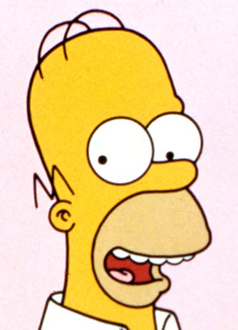

About
'Blow the Horn' Kid
Charles Montgomery Burns
George Bush
Barney Gumble
Julius Hibbert
Snake Jailbird
Lou
Horatio McCallister
Hans Moleman
Santa's Little Helper
Bart Simpson
Lisa Simpson
Marge Simpson
Seymour Skinner
Milhouse Van Houten
Clancy Wiggum
Boy with shades
Gary Chalmers
Chuck (student)
Agnes Flanders
Nedward Flanders, Sr.
Girl with glasses
Jaffee
Jimbo Jones
Leopold
Lewis Clark
Lewis' lookalike
Richard
Gerald Samson
Sara (Student)
Agnes Skinner
Smug Girl
Sophie Jensen
Cletus Spuckler
Wanda
White-Haired Girl
2nd Grade Sherri and Terri Lookalike
Bart-soundalike Construction Foreman
Jasper Beardly
Database
Jonathan Frink
Otto Mann
Nelson Muntz
Photo Girl
Ruth Powers
Abraham Simpson
Moe Szyslak
Tanya
Allison Taylor
Kearney Zzyzwicz
Carl Carlson
José Flanders
Ned Flanders
Ham
Bernice Hibbert
Larry (barfly)
Lenny Leonard
Troy McClure
Apu Nahasapeemapetilon
Janey Powell
Sam (barfly)
Sherri Mackleberry
Terri Mackleberry
Ralph Wiggum
Audrey McConnell's Students
Buck-toothed boy
Fat Tony
Long-haired girl
C. W. McAllister
Tyler (Male 3rd Grader)
Tyler's Brother
Rainier Wolfcastle
Brown-haired boy
Girl with necklace
Gil Gunderson
Lisa's Classmate 1
Bumblebee Man
Audrey McConnell's Student 3
Becky (Student)
Wendell Borton
Craig
Herman Hermann
Adrian Belew
Buck-toothed girl
Charlie (SNPP)
Melvin Van Horne
Mrs. Powell (Janey's Mother)
Nina Skalka
The Yes Guy
Girl playing soccer
Howard
Dewey Largo
Cecile Shapiro
Audrey McConnell's Student 1
Audrey McConnell's Student 2
Belle (senior)
Bashir bin Laden
Boy with Bangs
Boy with glasses
Brown-haired girl
Donald
Girl with ponytail
Gloria's Younger Son
Inga
Jenny
Major Preston
Morgan (3rd Grader)
Rafael
Sam (senior)
Shauna
Tyler (Female 3rd Grader)
Tyler's Sister
2nd Grade Lewis lookalike
Nigel Bakerbutcher
The Be Sharps
Coward
Dakota (Orange)
Duffman
Duffman's daughter
Queen Elizabeth II
Gloria (White Christmas Blues)
Gloria's Husband
Gloria's Older Son
Kyle (3rd Grader)
Megan
Ms. Dubinsky
Nick Riviera
Spider-Man
Springfield Station Man
Mrs. Vanderbilt
Gloria's Daughter
Rupert Murdoch (character)
Martin Prince, Sr.
Angry Dad
Elton John (character)
Randy Newman
WALL·E
Ashley (3rd Grader)
'Where the Red fern Grows' 5th grader
Binky
Cora
Fun Homer
Matt Groening (character)
Intellectual Homer
Justin
Justin's father
Serious Homer
Stavros
Upward Bound director
Cool Mom 1
Cool Mom 2
Cool mom 3
Danny
Husband of Cool Mom 1
Husband of Cool Mom 2
Husband of Cool Mom 3
Jeffrey Albertson
Jessica Lovejoy
Mike's Students
Krusty the Clown
Martin Prince
Plopper
Dolph Starbeam
Timothy Lovejoy, Jr.
'N Sync (character)
Alice Glick
Helen Lovejoy
Joe Quimby
Jebediah Springfield
Town Jubilation Committee
Sylvia Winfield
Black Teacher
E-mail
Sherri and Terri's mother
Roy Snyder
Gary Coleman (character)
Emma
French Chef
Funzo
Jim Hope
Cookie Kwan
Milo
Mrs. Zzyzwicz
Strawberry
The Thing
Dr. Velimirovic
Elmo
Mrs. Muntz
Rex (Bart of Darkness)
Ashley
Homer's clones
Number 2
Francine Rhenquist
Ling Bouvier
Blinky
Jitney Spuckler
Whitney Spuckler
Frankie the Squealer
Adam
Clancy Bouvier
Female Twin
Kevin (Stealing First Base)
Male Twin
Howland Simpson
Virgil Simpson
Dahlia Brinkley
Doug (nerd)
Gary (nerd)
Britney Brockman
Cregg Demon
Cregg Demon's son
Dr. Hibbert's Daughter
Dr. Hibbert's Second Son
Maya
Cool kid
Coach Krupt
Audrey McConnell
Fit Tony
Onward Christian Schoolboys Academy teacher
Becky's Mother
The Grumple
Birthday Spuckler
Yeti
Rod Flanders
Huell Howser (character)
Martha Prince
Waylon Smithers, Jr.
White Weasel
Eleanor Abernathy
Annette
Art teacher
Robert Terwilliger
Clifford Burns
Todd Flanders
Groundskeeper Willie
Mr. Rhenquist
Mrs. Rhenquist
Brandine Spuckler
Sarah Wiggum
Charcoal Briquette
Kumiko
Stan Lee
Mr. Clark
Mrs. Clark
Old King Coal
Petroleus Rex
Radioactive Man (character)
Mr. Taylor
Black Weasel
Mr. Black
Sadruddin Mahbaradad
Kent Brockman
Old Jewish Man
Stampy
Alex Trebek (character)
Ms. Albright
Jesus Christ
Kearney Zzyzwicz, Jr.
The Rich Texan
Shary Bobbins
Disco Stu
Cosine
Dr. Octopus
Brody McKenna
Alaska Nebraska
Maggie Simpson
Alex Whitney
Elizabeth Hoover
Edna Krabappel
Sherri and Terri's father
Llewellyn Sinclair
Kirk Van Houten
Report Card
Dylan Spuckler
Maude Flanders
Taylor Spuckler
Patty Bouvier
Selma Bouvier
Eddie
Doris Freedman
Jeremy Jailbird
Lucas Bortner
50 Cent (character)
Alcatraaz
Bus 22 Driver
Lurleen Lumpkin
Abbie Simpson
Corey Masterson
Tony Blair (character)
Jacqueline Bouvier
R2-D2
Edwina
Abby
Abigail
Candy
Ooda
Laura Powers
Ron
Shasta
Mojo the Helper Monkey
Snowball V
King Henry VIII
Ludwig van Beethoven
Margerine of Aragon
Wolfgang Amadeus Mozart
Bud Armstrong
Mario
Coach Clay Roberts
Angelica
Nana Sophie Mussolini
Louie (mafia)
Louie (Midnight Towboy)
Andy Dick
Sheila Chow
Mr. Teeny
Dwight Diddlehopper
Dwight Diddlehopper's Accomplice
Cupcake Kid
European Female Moe
List of Star Wars Characters
Sherri and Terri's sister
Ian (Very Tall Man)
Jack Marley
Poppy
Bart's Elder Son
Bart's Younger Son
District Aliens
Maude Flanders (ghost)
Flight Attendant (future)
General Hospital Receptionist (future)
Heathrow Teleport Departures Worker
Martians
Medbot
Patty's Lovebot
Selma's Lovebot
Springfield General Hospital Nurse (future)
Talking Tree
The Nahasapeemapetilon Octuplets' Octuplets
Zia Simpson
Ralph Nader
God
Aileen
Cletus (I Married Marge)
Captain Lance Murdock
Shotgun Pete
Airport Stair Bot
ATM Bot
Bestimus Muchos
Coffee Machine Bot
Charlton Heston
Hot Dog Oven Bot
Malibu Stacy
Melody
Squishee Machine Bot
Drederick Tatum
Martha Quimby
The Parson
Jeremy Freedman
Luann Van Houten
Lyla
Lindsey Naegle
Rachel Maddow (character)
Langdon Alger
Tyler's Father
Amendment To Be
Roger Meyers, Jr.
Theodore Roosevelt
Amish Man
Busker
Chili Man
Ice Cream Man
Pool Shark Salesman
Amy
Anastasia
Ernst
Gunter
Ancient Mystic Society of No Homers
Arnie Pye's Pilot
Anderson
Cadet leader
Franklin
Platt
Poetry instructor
Rangemaster
The Commandant
Andy Warhol
Astrid Weller
Antarctic Researcher 1
Antarctic Researcher 2
Bruno Drundridge
Adolf Hitler
Antonowski
Retirement Castle administrator
Walsh
Anya
General Krull
Scoey
Aquaman
Arthur Crandall
G.B. Shaw
Gabbo
Enrico Irritazio
Princess Kashmir
Arcade Cashier
Arcade Kid
Crowd
Bleeding Gums Murphy
Freddy Krueger
Fred Kanneke
Bob Arnold
Model U.N. Club
Mr. Zzyzwicz
Bender Bending RodrÃguez
Benjamin (nerd)
Estelle Beardly
Roz Davis
Smilin' Joe Fission
Joey Crusher
Amber Dempsey
Adil Hoxha
Ice Cream Lady
Lowblow
Celeste
Stacy Lovell
Mary Bailey
Dakota (Blond)
Bighorn sheep
Frank Grimes
Donny (The Debarted)
Ms. Phipps
Robert Pinsky (character)
Buddy Holly
Richie Valens
Lois Pennycandy
Cloisters Academy Headmaster
Chemistri Guy
Meth Guy
Sonic the Hedgehog
The Swedish Chef
Mona Simpson
Mr. Bergstrom
Bill Clinton
Count Dracula
Hubert Wong
Isabel Gutierrez
Üter Zörker
Kang
Kodos
Princess Penelope
Hank Scorpio
Legs
Don Vittorio DiMaggio
Herbert Powell
Jack Bauer
Stefane August
Harlan Dondelinger
Baby Button Eyes
M.C Birthday
Jay Sherman
Baby-Proofing Saleswoman
Babysitter
Bait Shop Owner
Gloria S.
Springfield Billy
Tiffany Spuckler
Jimmy Carter
Emile (executive)
J.P.
Mindy (executive)
Sandy
The Southern Colonel
Becky (It's a Mad, Mad, Mad, Mad Marge)
Dr. Foster
Alec Baldwin (character)
Ron Howard (character)
Baron von Wortzenberger
Grandma Van Houten
Grandpa Van Houten
Grandpa Van Houten's Second Wife
Milton Haas
Lewis' grandfather
Judge Muntz
Sherri and Terri's Grandmother
Iggy Wiggum
Battery
The Human Fly
Mayor Quimby's Body Guards
Crystal
El Barto
Former-Mayor
Simpsons WikiManual of Style
Uranium 235 Rods
Mr. Dandy
Benjamin Franklin
Corporal Punishment
Homer the Thief
Hermano Gamelo Hibbert
Cookie Salesgirl
Duff Beer Advertiser
Master Sushi Chef
Beatrice Simmons
Johnny (soldier)
William MacDougal II
Rex (I Love Lisa)
Superdude
Gulliver Dark
Ann Landers
Handsome Pete
Hortense Simpson
Apu's Mother
Billy (actor)
Brothers and Sisters of Wesley Wiggum
Hurt Leg Simpson Relative
Chet Simpson
Dr. Simpson
'Suing' Simpson Relative
Wesley Wiggum
Munchie
Seth
Cyndi Lauper (character)
Gyro
Henri the Hair Stylist
Tommy
Q-Bert Spuckler
The Warden (The Frying Game)
Julius Hibbert's father
Orville Simpson
Furious D
Toadstool Jockey
Tree Jockey
Mr. Vanderbilt
Woman Jockey
Poochie
Thelonius
Joey (mafia)
Clarissa Wellington
Anna Maria D'Amico
The Callibricis' Goons
Dragon
Malicious Krubb
Colin
Colby Krause
Medicine Woman
Lionel Richie (character)
Arnold Schwarzenegger
Cruise Line Man 1
Cruise Line Man 2
Mr. Johnson
Telephone Operator
Crystal Meth Spuckler
Dubya Spuckler
International Harvester Spuckler
Samantha Stankey
Female Mail Carrier
The Genie
Vicki Valentine
Geoff Jenkins
Disco Stu's girlfriend
Kyle LaBianco
Taffy
Nikki McKenna
Benevenstanciano
Earhart
Fitz
Garcia
Jericho
Keneally
McGriff the Crime Dog
Van Zuylen
Ward
Bernie
Construction Worker
Dean Bitterman
Dog (SNPP)
Female Applicant Reader (SU)
Female Nuclear Inspector
Guidance Counselor
Jock
M-Z Counselor
Male Applicant Reader (SU)
Male Nuclear Inspector
Nerd (School of Hard Knockers)
Nerd (SU)
Nuclear Inspector
President of the United States (movie)
Punchbowl Student
Red Headed Employee
Site Manager
Springfield University Board Member
Jeremy (network executive)
Madame Mimi
Virgil St.Clair
Richard Gere (character)
Kavi Nahasapeemapetilon
Tony Bennett (character)
Amid bin Laden
Mina bin Laden
Dottie
Alvarine Bisque
Marge's friend
Head of Springfield Box Factory
Haiti Veteran
Esquilax
The Fortune Teller
Hugh Parkfield
Howell Huser
Jub-Jub
Bob's Aide
The District Attorney
Woman Interviewer
Capital City Plaza Hotel Employee
Mindy Simmons
Dr. Demento (character)
Humphrey Boa-Gart
Mr. Bananas
Mrs. Bananas
Edgar Neubauer
Prudence Goodwyfe
The Big Bopper (Grave)
Cecil Terwilliger
ClownFace
Kiki Highsmith
Chinese Masseuse
Frank Grimes, Jr.
Bob Dole
Manjula Nahasapeemapetilon
Johnny Tightlips
Horace Wilcox
Francesca Terwilliger
Titi
Titi's sister
Robert Terwilliger Sr.
Dame Judith Underdunk
Scrat
Irish Boy Most Resembling a Potato
Inga (Coming to Homerica)
Ogdenville Boy
Sven
Thor Bjorn
The Mad Hatter
Bonnie Flanders
Connie Flanders
Chucky
Rita LaFleur
Meathook
Ramrod
Cthulu
Bobby Mindix
Bobo
Daphne Burns
George Burns (character)
Bobo (Dog)
Joshua and Amber's Mom
Knitting Grandma
Norman Rockwell-esque Family
Reformed Dad
Son (There's No Disgrace Like Home)
Troubled Son
Don Brodka
Ludacris (Character)
Brittany (Student)
Kaitlin
Bambi Bouvier
Roscoe
Estelle
Dr. Brentano
Amber Simpson
Gladys Gurney
Al Gumble
Luann's Sister
Mr. Mussolini
Franklin Burns
Dink
Randy (tour guide)
Nelson's sister
Chinese Spy
Wang Po
White Dragon
Madam Wu
Fausto
Plastic Surgeon
Simpsons WikiProject Characters
Fido
Head of Santa School
Mervin Monroe
Sir Galahad
Mall Cop
Dr. H. Boyle
Dimoxinil Actor
Dimoxinil user
Executive 2
Karl
Al Simmons
Hannibal Lecter
Titania
Gretchen
Homer Jr.
Corduroy
Emily
Terrence
Mr. Estes
Devon Bradley
Diablo
Norman Van Horne
Questo
Brenda Weingarten
Handsome bachelor
Handsome bachelor's brothers
Mark (Regarding Margie)
Scott Weingarten
Tracy
Martha (robber)
Philip J. Fry
Katelyn
Luigi (Nintendo)
Brown Long Haired Girl
Smart Boy
Edna Krabappel's Students
Cesar
Ugolin
Chocolate rabbits
Godfrey Jones
Mr. Doyle
Remedial Class Teacher
Chloe Spuckler
Cody Spuckler
Heather Spuckler
Rex Banner
Fake Lisa Simpson
Ginger Flanders
Rachel Jordan
Flanders' pet woodpecker
Burns' Alien
Marvin the Martian
Leonard Nimoy (character)
Burns' Flying Monkeys
Fossil Fuels Goon
King and Queen Award Presenter
C. Ebenezer Burns
Eugene Fisk
Mike (Homer's Night Out)
Suzie
Hans (business man)
Jimmy Apollo
Darryl Strawberry (character)
Don Mattingly
Roger Clemens (character)
Steve Sax
Ozzie Smith
Spine Melter 2000
Tom Jones
Sebastian Cobb
Ghengis Khan
Krusty's son
Truckasaurus
Ezekiel
Ishmael
Phillips
Forrest Simpson
Pet Store Man
Albert Dershman
Yuma Hickman
Senior Dance Instructor
Glen
Jane (Movementarian)
The Leader
Oscar the Grouch
Larry (driver)
Emperor Akihito
Edward Christian
Robyn Hannah
William Milo
Johnny Newspaperseed
Lifeways Editor
Man Underneath Bowling Alley
Furious George
Mayo Clinic Doctor
The PBS Mob
Number 12
Number 15
Number 21
Number 27
Pete Sampras
Mesmerino
Waylon Smithers, Sr.
Mr. Costington
Moe's girlfriend
Strom Thurmond
Helen of Troy
Poseidon
Zeus
Squiggy
Jimmy the Snitch
Cleanie
Cookie
Clara Stetson
The Stooped-Over Fiddler
Conscience
Honesty
Jealousy
Libido
Dick Tufeld
Snow White
Ray Magini
Frosty the Snowman
Homer's cousin
Homer's cousin's son
Homer's cousin's wife
Santa's Little Helper's Brother
Caleb Thorn
Victor
Gravedigger Billy
Cyrus 15 wives
Cyrus's 15 wifes
Marie
Cyrus Simpson
Cheaty
Tito
Jonathan Franzen
Michael Chabon
Mr. Burns' older siblings
Devan Woosterfield
Quenley Woosterfield
Devil
Mother Superior
Gogo Yubari
Kim Jong-il (character)
Kobe Bryant
Larry (SNPP)
The Penguin
Caitlin (Waverly Hills 9-0-2-1-D'oh)
Kate Lynn
Katelyn (Waverly Hills 9-0-2-1-D'oh)
Milhouse's cousin
Ralph (Waverly Hills)
Waverly Hills Elementary School groundskeeper
Waverly Hills Elementary School teacher
Calvin
Ian (Bart the Genius)
Ticket Bouncer
Captain Sensible
Susan B. Anthony Man
Les Rock Stars
Grim Reaper
Maurice
SWAT Leader
Stan (Car Salesman)
Milhouse (Earthland Realms)
Sophie
Charles Montgomery Burns' robots
Goose Gladwell
Baron Von Kiss-A-Lot
Franklin Jefferson Burns
Wally Kogen
Keggy
Milhouse's Date
Chuck's Father
Clown Doctor
Rachel Cohen
Diane (network executive)
Grant Connor
Three-Eyed Lobster
Jon Hamm
Milhouse (Shelbyville)
Shelby
Shelby's Father
Shelbyville Abe
Shelbyville boy
Shelbyville lemonade boy
Shelbyville lemonade boy's brother
Shelbyville Martin
Shelbyville Nelson
Vance Connor
Mayan gods
Mayans
Draco Malfoy
Princess Palomita of Prussia
Eartha Kitt (character)
Holly Hippie
Gym Teacher
Mighty Pigs
Volleyball Coach
Editor of Everyman
Everyman
Avery Mann
Lyle McCarthy
Prius Albertson
Elder Moleman
Jasper's son
Old Jewish man's son
English Scientist
Otis
Professor Lombardo
Dr. Zitsofsky
Hank Hill
The Nahasapeemapetilon Octuplets
Odd Koala
Homer's Lhasa Apso
Frankie (Health Inspector)
Itchy & Scratchy robots
John Travolta
Reverend Flanders
Denis Leary (character)
Bill Gates
Howard (florist)
Yendor
Professor Huntington
Luke Skywalker (parody)
Princess Agoomba
Yoda (parody)
Sherri and Terri's cousin
Sarah (Bart's Girlfriend)
Joan Bushwell
Kitenge
Muntu
Professor Skizzletwitch
Wile E. Coyote
Zack (Springfield Retirement Castle)
Kaiser Wilhelm II
Sundance Kid
Lou (cow)
The Great Raymondo
Homer Simpson
Choose a season:
Season 1
Season 2
Season 3
Season 4
Season 5
Season 6
Season 7
Season 8
Season 9
Season 10
Season 11
Season 12
Season 13
Season 14
Season 15
Season 16
Season 17
Season 18
Season 19
Season 20
Season 21
Season 22
Season 23
Season 24
Season 25
Barney's Bowlarama
Channel 6
Baby Seal Beach
Bloodbath Gulch
Catfish Lake
123 Fake Street
The Gilded Truffle
Duff Brewery
Capital City
Globex Corporation
Burns Manor
Evergreen Terrace
Camp Land-A-Man
742 Evergreen Terrace
Frigid Falls
Cape Fear
Cypress Creek
The China Syndrome
Calmwood Mental Hospital
First Church of Springfield
Barnacle Bay
Brockway
Ayn Rand School for Tots
Duff Gardens
Classy Joe's
Gulp 'n' Blow
Capital City Airport
Garbage Island
744 Evergreen Terrace
Dr. Zitsofsky's Dermatology Clinic
Circus of Values
Dr. Monroe's Family Therapy Center
Bob's RV Round-Up
Ethnictown
Crackton
Aztec Theater
Girdles N' Such
The Ear Piercery
Costumes
Fiesta Terraces
Chateau Maison
Chez Paree
Hair Clinic
Capital City Suspension Bridge
Capital City Duff Brewery
Bootleg T-Shirt Emporium
Cha Cha
Capital City Stadium
740 Evergreen Terrace
Coolsville Comics & Toys
Bloodbath & Beyond Gun Shop
Dr. Nick Riviera's Blood Bank
Channel 6 News
Chinatown
Greektown
Gay Neighborhood
Guidopolis
Duff Stadium
Echo Canyon (location)
Cranford
Department of Motor Vehicles
Dingo Junction
Ah, Fudge! Factory
FaceStuffers
Berger's Burgers
Au Naturel
Ajax Steel Mill
Grocery Store
Eatie Gourmet's
Eye Caramba
MediaWiki:Createplate-Location
Duff Beer Krusty Burger Buzz Cola Costington's Department Store Kwik-E-Mart Stupid Flanders Park
The Boob Tubery
Billionaire Camp
The Frying Dutchman
Funeral Parlor
Evergreen Terrace (Simpsons Road Rage)
Entertainment District (Simpsons Road Rage)
Enriched Learning Center for Gifted Children
Goose's Gags and Gifts
Evil House
Bait Shop
Chupo's Candy Store
Hailstone's
The Aristocrat
Downtown Springfield
Aphrodite Inn
Diz-Nee Land
Catfish Lake Bait Store
Gas'N'Gulp
All Trees $75
Christmas Tree Farm
12th Avenue
D Street
First Bank of Springfield
Aced Shoe
Creepy Family's House
Freaky Family House
Bart's Imaginary Hell
Elm Street
Get Your Photo Taken with Bigfoot!
Half-Man Half-Ape Burgers
Candy Most Dandy
Grassy Hilled Area
Books
Carmel Corn Warehouse
Coffee Shop (Bowlarama)
Florence of Arabia
Girlesque
Foxy Boxing
Al's Work
Barney's apartment
Airport le Paris
Albanian Airport
Bon Dormin
Café
Communist Base
Communist Satellite
Eiffel Tower
America's Most Armed and Dangerous Office
Bike Track
Charlotte
Bikini Shop
Dimoxinil Beach
Halloween Stage
Capital City State Headquarters
82 Evergreen Terrace
East Springfield
Evergreen Terrace Cliff
All Night Gym
Burger King
Costington's
General Chang's Taco Italiano
Dead Lobster
Downtown (Simpsons Road Rage)
Fortune Megastore
Da Buzz Club
Fast-Food Boulevard
Capitol Building
Garden of Eden
Bagel Boy
Gypsy's Shop
Cora's Diner
Camp Deadly
England
Brazil
Australia
China
France
G. Bannister & Associates
Coffee & Tea
Discount Fashion
Canada
Beachcomber Barber Shop
Gull Things Considered
3rd Street
3rd Street Station
156th Street
181st Street
257th Street
Groovy Grove Juice Corporation
Elm Street Video Arcade
Euro-Itchy & Scratchy Land
Circuit Circus
Bail Bonds
Bookaccino's
Boris' Car Loft
Cuba
Alaska
Edna's Edibles
'Muff Said
H.R. Muffin Stuff
Donny's Discount Gas
All Creatures Great and Cheap
Blockoland
The Creator's Mansion
Equalia
Alley
Cameras
The Auto Graveyard
Groovy Grove Natural Farm
Flancrest Enterprises
Camp See-A-Tree
732 Evergreen Terrace
Hairy Shearers
Five Corners
Apu's apartment
Dr. Julius Hibbert, M.D. Family Practice
19 Fish Smell Drive
Greaser's Cafe
Builders' Barn
Crazy Vaclav's Place of Automobiles
Caesar's Pow-Wow Casino
Dunkilderry
Cisc O'systems
Giant's Causeway
Guinness Brewery
Blarney Castle
Germany
Albania
Alkali Flats
The Forbidden Barn
Fort Springfield
Fort Fragg
CostMo
Goody New Shoes
316 Pikeland Ave.
Café Kafka
Abandoned aqueduct
35 Industry Way
1 Ocean View Drive
Family Fun Center
The Copy Jalopy
BetterThanTV.com
Crazy E.T.'s Phone Home
Captain Blip's Zapateria
Fancy Farms
652 8th Avenue
Dregs
The Hague
Hague airport
Expressions
Asia de Cuba
Bachelor Arms
Bureau of Licenses and Permits
Donner's Party Supplies
Cockamamie's
13 Euclid Street
Fort Clinton
Cypress Creek Elementary School
Escalator to Nowhere
50 Foot Magnifying Glass
Finland
Crocodile Dunkee
Cloisters Academy
Flickeys
Family Therapy Centre
748 Evergreen Terrace
Fat Tony's house
Discount Frames
Florida
Branson
Argentina
Buenos Aires
First A.M.E. Church of Springfield
57 Walnut Street
Burns' Surveillance Room
Gum for Less
Conformco
Arabic Palace
Executive Washroom
Capital City Plaza Hotel
Hall D
French Polynesia
Butabitari
Bolivia
Chile
Antarctica
Afghanistan
Algeria
Andorra
Angola
Armenia
Aruba
Austria
Azerbaijan
The Bahamas
Belarus
Belgium
Belize
Bermuda
Bosnia-Herzegovina
Botswana
Brunei
Bulgaria
Burkina Faso
Burma
Cambodia
Cameroon
Canary Islands
District 9
District 10
Colombia
Costa Rica
Congo
Croatia
Czechoslovakia
Denmark
Ecuador
Egypt
El Salvador
Estonia
Bangladesh
Ethiopia
Ivory Coast
Ghana
Greece
Guadeloupe
Guatemala
Haiti
Computer Hospital
Future Site of Children's Hospital
First Church of Lard Lad
Google (building)
El Chemistri
Haile Delicious Ethiopian Food
East Oak Street
Classy Girls Strip Club
1501 East Oak Street
Apu's Taj Mahal
Domicles For The Destitute
Adult Education Annex
Broken-Home Chimney Repair
Airport Refueling Way (bus stop)
Animal Psychotherapy Center
99¢ Shrink
Cinderblock Village
Hal's Liquor
Coffee Shop (The Blue and The Gray)
Are We Hair Yet?
Another Government Highway Project That Will Never End
Consulate of China
Chili Blasters
Dimwillie's
Food Court
Greek Town
Crouching Tiger Hidden Eggroll
Coffee Shop (mall)
Abandoned Store
1987 Calendars!!!
Cossacks Fifth Avenue
Calgary
Car Wash
Expensive Bros. Jewelry
Forgotten Amos Cookies
Blocko Store
Condos at Towne Centre at Springfield Glenne
Drippin' Dots
Cinnabun
Crème de la Creams
Cold Navy
Banana Dictatorship
American Princess
Hamburger Heaven
Abercrombie & The Other Guy
Book Cellar
Bikini Atol
Cookie Mart
Child Psychiatrist
Dukakis Campaign H.Q.
Electronics, Etc.
Falkland Islands
15201 Maple Systems Road
Bar
Camp Flab-Away
E4 Convention
734 Evergreen Terrace
Bartovia
Gee Your Hair Smells Terrific Arena
Bates Motel
Big T Burgers & Fries
Big T Theatre
The A-Maize-Ing Maize Maze
Canada-USA Border
Dudley Do-Drugs
Burns & Noble
Cropduster Video
GAO Schwarz
Aspen
Abercrombie & Rich
Blockbuster Video
Bloaters at the Squidport
Bismark
Birthplace of Matt Groening
Birthplace of Jesus (Disputed)
Bill & Edwina's Tour-Rest Cabins
Cookie Colossus
Cosmic Wars Ranch
Call Me Delish-Mael Taffy Shop
Civil War Prison and Museum of Sideburns
Cypress Creek Promenade
Hammock Complex
Chichen Itza
Great Wall of China
Big Ben
Fireworks, Candy, and Puppy Dogs Store
Bart Flying at School
Bush House
City Morgue
754 Evergreen Terrace
Gold House
Crystal Cathedral
Czech Republic
Gavelby's Auction House
Freak-E-Mart
Groovetone Records
B. Hoffman Dentist
Bart's Tree House
Capitol City Apartments
Evergreen Terrace (Simpsons Road Rage)/References
Evergreen Terrace (Simpsons Road Rage)/Quotes
Entertainment District (Simpsons Road Rage)/References
Downtown (Simpsons Road Rage)/Quotes
Cheddarbarrel Farm and 4-H Center
Abbattoir & Costello LLC.
Entertainment District (Simpsons Road Rage)/Quotes
German Castle
Downtown (Simpsons Road Rage)/References
Atlanta, Georgia
Georgia
Downtown (Simpsons Road Rage)/Gags
Entertainment District (Simpsons Road Rage)/Gags
California
Evergreen Terrace (Simpsons Road Rage)/Appearances
Colonel Burns' Manor
Evergreen Terrace (Simpsons Road Rage)/Gags
Casino
Arby's
Counter Truancy Unit
Diz-Nee Historical Park
Grand
Dexter family's house
The Drunk Paralegal Karaoke Supplier
Greek Orthodox Church
Carl's Dad Caverns
Geezer Rock
Fort Sensible
Golf 'N' Die Retirement Village
Campbell's Chunky Soup Maximum Security Prison
Chateau d'If Prison
Cafe de Mexico
Clam-Elot Sea-Food
Blowhole Republic
Abercrombie & Fish
Chazz Busby Ballet Academy
Fête Accompli
Bail Bonds and Beyond
General Store
Flanders family's bomb shelter
Broken Dreams Storage Lockers
Enron's Ride of Broken Dreams
Box Fort
Abe's and Selma's House
Books! Books! and Additional Books!
Buckingham Palace Quick Lube
Four Seasons
Capital City Convention Center
Alberto's House
Catholic Heaven
Bin Laden family's house
Diner
Area 51-A
Area 51
Army Proving Grounds (bus stop)
End of the Line
Barnacle Bay Theater
Candy Shoppe
Barnacle Bay Oceanographic Institute
Amish Country
Crypto Barn
Dr. Nick's Walk-In Clinic
Dentz
Beachwear
Antiques
Clay Jars
Gifts
Coffee Shop (New Kids on the Blecch)
Classified Records
Djibouti
Freestone Family Peach Orchard
Burger Plate
Fish 'n' Chips
Cap'n Jack's Bait and Tackle
Burgers n' Fries
Gotham City Opera House
Crafty Art's Arts and Crafts
Fresh Squeezed Lemonade
Fried Dough
Day-Care Center
Grease Recycling Plant
Downer's Party Supplies
Astroid Elementary
Alternative Knifestyles
Armstead's Mopeds
Fab Abs
Farmer Billy's Bacon Factory
Deluxe Sunday Brunch
Animal Assistants
Fortress of Choclitude
743 Evergreen Terrace
FBI Call Center
Atomic-Con
Boise Astoria
Alley McBalls
Garlicville
Chuck Dukewagon's All American Chow Lounge
Guinea Pig Rescue Center
Cayman Islands
Cretaceous Park
Buzz Cola Dome
Moe's Tavern
Shelbyville
Screamville
Kwik-E-Mart
North Haverbrook
Rigel 7
Leftorium
Krusty Burger
New Springfield
Kentucky Fried Chicken
The Itchy & Scratchy Store
New Horrorfield
Pressboard Estates (neighborhood)
The Land of Chocolate
Rural Route 9
Shapes
Lard Lad Donuts
Mount Seldom
David Mirkin
Krustylu Studios
Lake Flaccid
Little Pwagmattasquarmsettport
Ogdenville
Legitimate Businessman's Social Club
Little Italy
Shelbyville Orphanage
Humbleton
L.A. Body Works
Ironic Punishment Division
Pitiless Pup Attack Dog School
Mr. Burns' Casino
Olde Springfield Towne
Sir Putt-A-Lot's Merrie Olde Fun Centre
Lake Springfield
Recluse Ranch Estates
Mt. Embolism
Quimby Compound
The Happy Sailor Tattoo Parlor
The Popcorn Shack
Santa School
Pawn Shop
Herman's Military Antiques
Noise Land Video Arcade
The Jazz Hole
The Jerky Hut
International House of Answering Machines
Shorty's
Rubber Baby Buggy Bumpers Babysitting Service
Ron's Meat
Jake's Unisex Hair Palace
Royal Majesty
The Penny Loafer
Original Frenchie's
Peanut Street
Leavelle's Bodyguard Academy
Ma and Pa's
Old Jewish Man's House
Mrs. Bellamy's House
Shelbyville Bluffs
Little Newark
Rolling Rock
Lower East Side
Old Fishin' Hole
La Maison Derrière
I Can't Believe It's A Law Firm!
Pepi's House
KBBL Radio
The Singing Sirloin
Phineas Q. Butterfat's 5600 Flavors Ice Cream Parlor
Places visited by the Simpson family
Kamp Krusty (location)
Royal Majesty for the Obese or Gangly Gentleman
Mt. Swartzwelder Historic Cider Mill
Mt. Splashmore
Mount Carlmore
Luigi's
Shelbyville Heights
Little Bangkok
Shelbyville Elementary School
It Blows
New Bedlam Rest Home for the Emotionally Interesting
Ice Cream Parlor
Old, abandoned summer-camp
New York City
Shotkickers
The Hate Box
Planet Hype
The Hungry Hun
P. Piggly Hogswine's Super-Smorg
She-She Lounge
Russian District
Mr. Burns Basketball Stadium
Little Lisa Recycling Plant
Howard's Flowers
L'il Chapel
Shotgun Pete's
The Happy Sumo
King Toot's Music Store
Lullabuy$
Kentucky Fried Panda
Mt. Springfield
Mary (shop)
Nuclear Lake
Highway Nine Bird Sanctuary
Imaginary Funeral Parlor
Official Bigfoot Souvenirs
Research Center
Hotel
Restricted Grass
Mud City
Sapphire Lounge
Mike's House
Preschool
The Rusty Barnacle
Shoe City
La Rotisserie
Patiserrie
Marge on the Lam/Appearances
Homer the Vigilante/Appearances
Krusty's Apartment
Mapple
Honey Pot
Next Exit
Karl's Apartment
Ren's Meat
The Raven Chamber
Imaginary Tree
Maggie's Imaginary Future House
Krusty's Clown College
Mapple Store
Saint Sebastian's School for Wicked Girls
Hell
Manhattan Square
London
Nuclear Power Plant (Simpsons Road Rage)
Joe's Tavern
Red Blazer Realty
SHØP
Screaming Monkey Medical Research Center
The Murderhorn
Itchy & Scratchy Land (Theme Park)
House-O-Donuts
The Leaf Garret
Knockers
Kozy Kabins
Ronald Reagan Reeducation Center
Litters O' Critters Pet Shop
Millionaire Camp
London Eye
India
Japan
Italy
Scotland
Loch Ness
Morocco
River Thames
Junkytown Legal Clinic
Larry's Cane Store
Little Pwagmattasquarmsettport Public Library
Heaven
Peru
Machu Picchu
Paris
Isotope Stadium
R. Crumb's Keep on Muffin'
Muff Mart
Muffin Store
Hong Kong
Ireland
O'Flanagan's Pub
Israel
Sit-N-Rotate
Praiseland
Matlock Expressway
Rommelwood Military School
Murder Town
Homer and Bart's Surveillance Camera Blind Spot
The Simpsons: Hit & Run/Appearances
Heathrow Airport
Jazzy Goodtime's
Main Street
Municipal House of Pancakes
J.R.R. Toykin's
Morningwood Penitentiary
The Pimento Grove
Santa's Village
Old Simpson Farm
Old Springfield Library
Itchy & Scratchy International
Krustyland
Poppa Wheelie's
Mexico
Hewlett Fitzpackard
Mick-rosoft
Paramountie Studios
Itchy & Scratchy's
Republican Party Headquarters
Rancho Relaxo
Jebediah Springfield Park
Nero's Palace
Salsiccia
Nick's Bowling Shop
Las Vegas
Sequel Stop
Monstromart
Honest John's Computers
Heinrich's Monocle Shop
Simpsons Wiki:Manual of Style (locations)
The Italian Bob/Appearances
Russia
The Island
Plaster Mountain Theme Park
Kent Brockman's mansion
Palm Springfield Resort
Java the Hut
Jittery Joe's Coffee Shop
Sha-Boom Ka-Boom! Cafe
I.P.O. Friday's
Overpass Diner
Hickton
Oslo
Norway
International Court of Justice
Netherlands
Izzy's Deli
Rock Bottom Remainders
Kidstown USA
In 'N' Out Ear Piercing
Murder House
Plunderer Pete's
Pay, Park & Pay
Li'l Valu-Mart
Popsicle Stick Skyscraper
Playdough Factory
Pillow Factory
Myundai
Myundai Car Store
Left-Mart
PetroChem Petrochemical Corporation
Mt. Useful
Satan’s Anvil
Pest Bye
Mayo Clinic
John Ford Center for Alcoholic Cowboys
Rainier Wolfcastle's Mansion
Lithuania
Red Tick Beer Brewery
Prince House
Moab's
Semi-Painless Dentistry
Painless Dentistry
Lillie Langtry Theater
Shoes For Tots
Maryland
Hibbert Moneymaking Organization
Marital Stress Hotline
Homer and Mindy's Mansion
National Energy Convention
Madame Chao's
Samoa
Niue
Line Islands
New Zealand
Kingman Reef
Singapore
Malaysia
Papua New Guinea
Philippines
Paraguay
Rand McNally
Mars
Lisa's House (future)
Hungary
Iceland
Indonesia
Iran
Iraq
Jamaica
Jordan (country)
Kenya
Kiribati
Laos
Latvia
Lebanon
Libya
Madagascar
Micronesia
Monaco
Mongolia
Mozambique
Nepal
Pakistan
Panama
Poland
Polynesia
Portugal
Romania
Saudi Arabia
Serbia
Heathrow Teleport Departures
Montgomery Burns Institute For Soul Extraction
Pool Sharks
Lackluster Video
Little Ethiopia
Krusty Fried Chicken
Lion of Gojo Nightclub
Monoclecrafters
Johnson's Teleporters
Second-Best Western Hotel
Medieval Times
Moe's Apartment
Marriage Counseling
Painful Memories Party Supplies
Pressboard Estates (bus stop)
Industrial Road
Quack In The Box
Sit 'n' Weep
Psychiatry Row
Lugash's Gym
Music World
Korea Town
Old Abandoned Warehouse
Plastic Surgery Center
Shavings
Ice Bridge
Page's Pharmacy
Peanut Street Hotel
North Haverbrook Courthouse
Moe's Express
Pizzeria Cheapo
Odd Ones
Old Springfield Subway
Loose Chandeliers
Market
Little Ukraine
Naming Rights Available
Ice Cream
Home of the Braid
Nouveau Bitch
Markups & Spender
Nothing Under a Thousand
Puttering Barn
Shot In The Face Photo Studio
P.F. Wangs
Pillowmint Hotel
Neat & Tidy Piano Movers
Silicon Alley Strip Club
Merry Widow Insurance Co.
Homer's Land of Innermost Thoughts and Utmost Desires
Shameful Eddie's
Hardware (Bumtown)
Hardware (Downtown)
Lower East Side (bus stop)
Miami Airport
Miami Beach
North Korea
Kosovo
Kiev
Insane in the Ukraine
Hot to Trotsky's Ice-Skating Rink
S.N.P.P. Cafeteria
Linens-N-Such
Marvyn's
Onward Christian Schoolboys Academy
Rural Route 27
Pottering Barn
Princeton University
Hammock Hut
Hammocks Are Us
Put Your Butt There
Mary-Anne's Hammocks
Notre Dame of Springfield
Krusty's Mansion
Lenny's House
Jordan
Living tree
Occult section
Luck o' the Irish Wishing Well
Lake Tahoe
Nude-E-Mart
Lazy I Ranch
Nantucket
Simpson Laser Tag
Shelbyville Beach
Shelbyville Bird Sanctuary
Shelbyville Fertility Clinic
Shelbyville Downs
Shelbyville Hospital
Shelbyville Zoo
Shelbyville Car Impound Lot
Museum of Television and TV
Indian Burial Mound
Mickey Mao's
Nuclear Power Plant (Simpsons Road Rage)/References
Nuclear Power Plant (Simpsons Road Rage)/Quotes
Mental Institution
Krusty Burger Oil Rig
Señor Ding-Dong's Doorbell Fiesta
Joe's Diner
Nuclear Power Plant (Simpsons Road Rage)/Gags
Pudding on the Ritz
Island
Hiram Simpson's house
Johnny Fiestas
Museum of Suffering
Nudes Nudes Nudes
Mayor Quimby's mansion
Lisa Simpson Home for Abandoned Animals
Shelbyville Merchandise Mile
Palace
R
Montgomery Burns State Prison
Paradise Pier
National Bank of Springfield
Moeview Motel
Ned Flanders' Personal Hell
Rattlesnake Sanctuary
Mr. Burns' Summer Mansion
Hooters
Lotto 'N' Liquor
Krustyco Sweatshop
Hellman Avenue Medical Plaza
Home of Tomorrow
Photography
Mav's and Portia's house
Mav's and Portia's ski house
Li'l Ludwig's Music School
Iowa Non-International Airport
National Testing Center
Proctorville
Le Pamperie Hair Salon
Lake Placid
New Grand Canyon
Shelbyville Stadium
Protestant Heaven
Protestant Youth Festival
Old Springfield Mall
Le Petite Appétit
Mulberry Island
Mount Rushmore
Shlomo's Judaica
Palm Corners
Junkyard
Hemp City
Omni-Pave
Lombard Street
Lisa Land
Low Quality Inn
Inn
Sandy Beach
Motel
Just Rainsticks
Its a Wonderful Knife
Much Ado About Muffins!
My First Tattoo
Malaria Zone
Moe's Brewing Co.
Magic Palace
Sandals
Shell Shack
Madame and Masseur
Marrakech
Hot Dogs
Popcorn
Le Krusty Burger
Lego Land
Karate
Old Quarry
Holding Hands Point
Honey Me Mine
Shelbyville Nuclear Power Plant
Silicon Valley
Oil Refinery
Saks Fifth Grade
Li'l Chapel
One Size Fits All Lingerie
Simply Shoes
Plumbing Supplies
One Night Stan's
Sconewall Bakery
Hollywood
Los Angeles
Itchy's Glass-Blowing
Motel (Itchy & Scratchy)
Memory Recovery Institute
I Don't
Portland, Oregon
Riverdale
Origami Designs
Rat's Nest
Picture of Abe and Mona
Plant Operations Center
Myron's Sirens
Jackson's Klaxons
Phineas Q. Butterfat's Ice Cream Parlor
Oral Roberts University
Nowheresville
Nighthawk Diner
Mt. Useful Visitors Center
Repo Depot
Category:Characters
Springfield Nuclear Power Plant
Springfield
Springfield Elementary School
Springfield's State
Spittle County
Uncle Moe's Family Feedbag
Tibet Town
The Little Black Box
The Android's Dungeon & Baseball Card Shop
Springfield Bridge
Springfield Hydroelectric Dam
Springfield Town Square
Springfield Retirement Castle
Springfield International Airport
Springfield Drive-In
Springfield Monorail
VHS Village
Speed-E-Mart
South Street Squidport
The Simpsons Ride
Terror Lake
Stenchburg
Swartzwelder County
West Springfield
Category:Towns and cities
Springfield Community College
Springfield A&M
Springfield University
Category:Businesses
Springfield City Zoo
Ye Olde Candlemaker Shoppe
Springfield Police Department
Uncle Homer's Daycare Center
Springfield Juvenile Correctional Facility
Sprawl-Mart
Springfield Downs
West Springfield Elementary School
Springfield Box Factory
Springfield Heights Institute of Technology
Springfield National Forest
Springfield Heights
Spinster City Apartments
Springfield Mall
Springfield Town Hall
Springfield Park
Springfield Glacier
Category:Lakes
Springfield Concert Hall
Springfield Googolplex Theatres
Springfield Symphony Hall
Springfield Arts Center
Springfield County Court House
Springfield Cemetery
Springfield War Memorial Stadium
The Dew Drop Bar
Springfield Public Library
Springfield Plasma Center
Squeaky Farms Brand Genuine Animal Milk
Category:Public Facilities
Category:Medical and Health Facilities
Springfield Observatory
Springfield Tire Yard
Springfield Toxic Waste Dump
Springfield State Prison
Zesty's
Ye Olde Off-Ramp Inn
Category:Springfield Mall
Springfield County
Trader Earth's
Springfield Harbor
Springfield Lemon Tree
Springfield Gorge
The Vast Waistband
Springfield Mystery Spot
The Spaghetti Laboratory
Springfield Cemetery (Shorts)
Springfield Aquarium
Springfield Palace of Fine Arts
Skid Row
Statue of Jebediah Springfield
Springfield High School
You Forgot-Me-Nots
Spruce Caboose
Weenie Barn
Category:Natural Landmarks
Springfield Glen Country Club
Springwood Minimum Security Prison
Video Matchmaking
Thai Food Factory
Category:Springfield Elementary School
Try-N-Save
Suicide Notes
Toys "L" Us
Up, Up and Buffet!
Springfield General Hospital
Stu's Disco
Waverly Hills
The Great Tire Fire
Wuuf
Springfield Opera House
Wall E. Weasel's
Toys
Trees $60 and Up
X-Mas Trees Slightly Irregular
Tattoos
Springfield Primate Institute
Tenderfoot Gorge
Swimming Pool
Springfield Speedway
Springfield Sign
Victim's house
White House
Sox
UFO
Springfield Wax Museum
Springshire
Springfield Stadium
St. Jerome's Catholic School
Springfield Hardware Store
We Have Restrooms!
Trappuccino
Springfield Dam (Simpsons Road Rage)
Springfield Mountains (Simpsons Road Rage)
Springfield Knowledgeum
Springfield Skating Rink
Skates 'n' Such Ice Rink
Storytown Village
Springfield Post Office
Springfield Subway System
Springfield Stamp Museum
Springfield Wall of Fame
Category:Mountains
Springfield Police Station
Waynesport
Widow's Peak
Springfield Video Arcade
Stern Lecture Plumbing
Category:Countries
United States
Tern For The Wurst Delicatessen
Vancouver
Sweden
Weasel Island
Springfield Penitentiary
Tokyo
Springfield Railroad
Sleep-Eazy Motel
Springfield Animal Shelter
Springwarts School of Magicry
Springfield Airways
Tanzania
Totally Sick, Twisted, F***ed-Up Animation Festival
Treehouse of Horror XIII/Appearances
Springfield Dam
The Simpsons: Hit and Run - Level 1/Appearances
Springfield Convention Center
The Simpsons: Hit and Run - Level 2/Appearances
Springsonian Museum
Category:Streets in Springfield
Springfield Dinner Theater
Springfield Hall of Records
Springfield Animal Hospital
Springfield Community Center
Springfield YMCA
Springfield Historical Society
Springfield Municipal Building
Southern Cracker
Tahiti
Springfield Preparatory School
Category:Companies
Springfield Dump
Uruguay
Springfield Pet Cemetery
Category:Museums
Springfield Bowl
Category:Accommodations
Springfield Theater District
Category:Arcades and fun centers
Category:Schools and other educational facilities
Springfield Amphitheater
Springfield Donuts
Springfield Rent-a-Car
Wellness Foods
Category:Location stubs
Sportacus
The Java Server
U.S. Air Force Base
Skip's Diner
Category:Airports
Stoner's Pot Palace
Springfield Bachelor Apartments
The Wooly Bully
Skinner's House
Snuggler's Cove
Category:Stadiums
Suicide Bridge
Springfield Coliseum
Springfield Funeral Home
Springfield Monument Park
Springfield Arms
Springfield Hunting Supplies
Tommy Hillclimber
Woosterfield Hotel
The Springfield Inquisitor
Springfield Palace Hotel
Sprubway
Sprooklyn
Springfield Martial Arts Academy
Sprooklyn Bridge
Waterfront
Wee Monsieur
The Family Jewels
Springfield Botanical Gardens
Springfield Office of Unemployment
Springfield Naval Reserve Base
Waverly Hills Elementary School
Springfield Heights Promenade
Sweet Home Alabama
The Tam O'Shanter Connection
Texxon
Slide Factory
Unnamed district
State Legislature
Stockholm
Sydney
The Third Dimension
Springfield Museum of Natural History
The Slaughterhouse
Springfield Correctional Institute
The League of Extra Horny Gentleman
Springfield Atoms Stadium
Springfield Mountains
Springfield Beach
Teacher Holding Facility
Zip Zap and 'Za Pizza Arcade
Tuition Academy
Springfield Nature Preserve
Springfield Orphanage
Taylor House
Category:Houses with unknown addresses
Trent Steeles home
Stacy Lovell's House
The Rolling Stones Rock N' Roll Fantasy Camp
Category:Prisons
Springfield Women's Prison
Yuk-ingham Palace
Category:Homes
Category:States
Treehouse of Horror XXII/Appearances
Utility Basement B
Category:Counties
Category:Parks and recreational areas
The Creamatorium
Washington D.C
The Happy Earwig Motel
Category:Non-American Locations
Trout Hatchery
Category:American Locations
The Refuge of the Damned
Category:England
Solar Energy
The Graveyard of the Future
Category:Continents
Category:Mentioned Locations
Tonga
Thailand
South Pole Research Station
The Lofts at Springfield Elementary
University of Michigan
St. Beatles Cathedral
The Benny Hilton
Somalia
South Africa
Spain
Switzerland
Sudan
Syria
Tibet
Trinidad and Tobago
Tunisia
Turkey
Turkmenistan
Uganda
Ukraine
United Arab Erimates
Uzbekistan
Venezuela
Vietnam
Yemen
Zambia
Zimbabwe
Universal Studios
Ultranet
Springfield Cryogenic Facility
Zia's Ultranet Room
West Oak Street
Vulgari
The Loin King
Spellympic Village
Springfield Extension School
Teenage Pasteland
Starlight Motel
Springfield Lumber
Springfield Dry Cleaners
Top It Off
Stomach Staples Center
Styx and Stones Records
Springfield Buddhist Temple
Splitsville Icecream Sundaes
Category:Bus Stops
Two Guys From Kabul
The Kabuli Palow
Springfield Four Seasons
Springfield Laundromat
Suicidal Moron Pass
The Enchanted Snail
Vesuvius Pizza
Wicked Excess
The Picky Vegan
Tsarbucks
Skybucks
The Snub Club
Wedding Hall
U Tote
Towne Centre at Springfield Glenne
Category:Towne Centre at Springfield Glenne
UV
Spring Field Cleaner
Spiffany's
XO
Towne Centre Trolley
Smooches On The Beach
The Sole Provider
The Gridiron
SpringFace
Testoster-Zone
The Fifth Helping
Swapper Jack's
Springfield Public Pool
Springfield Fire Department
The Sharper Mark-Up
Swigmore University
T.V. (Shop)
The Prodigy Barn
World Wide Web
World Trade Center
Category:Camps
The Reality Channel
South Korea
File:Bart's Room.png
Ugli
The Big T Building
Veterans of One War
Winnipeg
Winnipeg Pharmacy
Springfield Creative Arts Academy
Springfield Episcopal Church
Victor's Secret
Tatters
The Bloated Liver
The Brushes are Coming, The Brushes are Coming
Category:One-time locations
Category:Cypress Creek
Swing Low Sweet Chariot
The Spend Zone
Springfield Youth Center
Category:Tourist attractions
Springfield Sperm Bank
Springfield Dog Park
Snowball II Municipal Cat Park
Category:Destroyed Locations
Slovakia
Spirograph Factory
Teejay's Zaymart
Category:Little Pwagmattasquarmsettport
Category:Factories
Springfield Place
Category:Beaches
Unknown Island
Category:The Simpsons Road Rage Locations
Springfield Mountains (Simpsons Road Rage)/References
Springfield Dam (Simpsons Road Rage)/References
Springfield Dam (Simpsons Road Rage)/Appearances
Springfield Dam (Simpsons Road Rage)/Quotes
Springfield County Fair
Slaughter House
Springfield Mountains (Simpsons Road Rage)/Quotes
Taj Mahal
Toys 'Я' Us
Stardust Drive-In
The Gassy Knoll
Springfield Mountains (Simpsons Road Rage)/Appearances
Taj Mah-All-You-Can-Eat
Springfield Dam (Simpsons Road Rage)/Gags
Springfield National Park
Solvang
Virgil Simpson's house
Springfield Tide Pools
Springfield Mountains (Simpsons Road Rage)/Gags
Springfield Soccer Stadium
Vic Tayback Hotel & Casino
Springfield Children's Hospital
Springfield Cosmetic Surgery Clinic
You Thai Now
Category:Theaters
Springfield Elementary School and Prison
Skobo's
Upward Bound
The Cloth Napkin
Toupee Chalet
The Springfield Shopper Building
The Lonely Arms
Springfield Christian School
Springfield Maximum Security Prison
Springfield Police Academy
Springfield Folk Art Museum
Springfield Recreation Center
Springfield Gas
Wind Chimes
Springfield Playhouse
Sleazy Sam's Payday Loans
The Starlight Motel
Category:Gyms
Topless Models
Stor-U-Stuff
The Ritz-Carlton Hotel for Transients
Springfield Union Station
Springfield Hobby Shop
Springfield City Jail
Who's To Know Motel
Springfield Press Club
Snooze at 11
Springfield Dry Cleaner
SUV Superstore
Tongue-Kiss Point
The Helter Shelter
Stuckey's
Springfield Armory
World Headquarters
Springfield Squidport
The Needle Exchange
Springfield Costume Shop
Springfield Community Theater
Six Toe County Courthouse
The Royal Fart Inn
Six Toe County
Sycamore Avenue
Springfield's oldest redwood tree
Turban Outfitters
Category:Springfield Squidport
Snack Shack
The Elegant Scoundrel
Swanky Fish
Springfield Sports Arena
Springfield Magnet School
Springfield Inn
Steel Mill
Smoke Factory
Springfield Wetlands
Yumà Ristorante
Ziff Mansion
Unincorporated part of Springfield
Victor/Victoria's
Village Apartments
Springfield Bus Station
Yogurt Nook
Springfield State Building
Springfield Performing Arts Center
Springfield Pet Shop
Ye Old Butcher Shoppe
Video Village
Stinking Fish Realty
Wed Lobster
Swell-Air Hotel
TNT Storage
The Peak Inn
Stuff-N-Hug
The Trading Post
Six Flags Over Krusty
Veterans From Unpopular Wars Hall
Woozy Canary Gold Mine